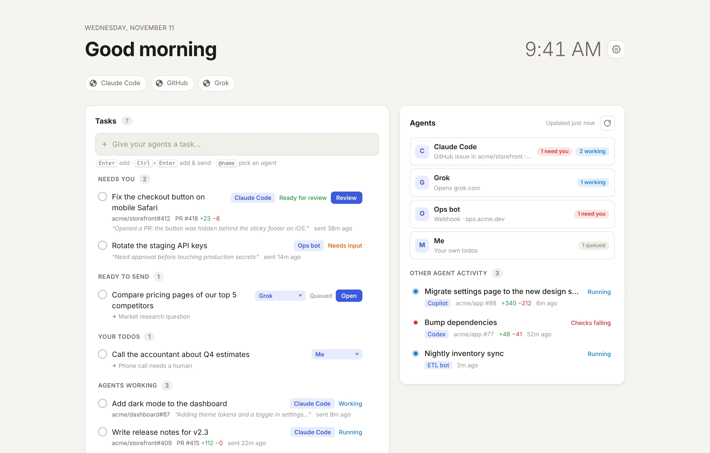
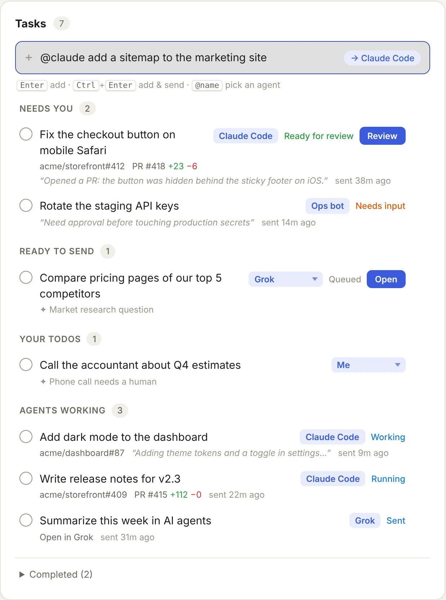

Type it
Open a new tab and write the task the way you'd say it. Add @claude or @grok if you already know who should take it.
A Chrome new tab for people who delegate
Helm turns every new tab into a task queue for your AI agents. Type a task, and Helm sends it to the right one: Claude Code, Grok, your own bots, or you. Then it tracks the task until it's done.
Free · No account · Works in Chrome, Edge and Brave

Routes tasks to
How it works
Open a new tab and write the task the way you'd say it. Add @claude or @grok if you already know who should take it.
Claude reads what each of your agents is good at and picks one, with a one-line reason. No API key? Keywords and mentions work too.
Helm follows each task: the agent picking it up, the PR it opens, checks running, ready for review, merged. You get pinged when it's your turn.
Try the router
Type a task and see where Helm would send it. This demo matches keywords in your browser. In the extension, Claude makes the call from your own agent descriptions.
Pick an example or type your own.
Agents
Each agent gets a short description of what it's good at and one way to receive work. Add as many as you like.
Helm opens an issue that starts with @claude, and the Claude Code GitHub Action picks it up. Copilot, Codex and other GitHub agents work the same way, with their own mention, label or assignee.
One click opens the agent and copies your task to the clipboard. If the agent accepts a prompt in its URL, Helm fills it in for you.
Helm POSTs { taskId, task } to your bot. The bot reports back through a small JSON status feed, and Helm updates the task live.
Calls, payments, signatures: things only a person should do land in Your todos, right beside the work your agents are doing.
Always know where things stand
Routed and waiting for your OK, or sent automatically if you prefer.
The agent's latest update, the PR it opened, and checks as they run.
Ready for review, checks failing, or a question. You get a notification and a badge.
Merged or finished, collected in Completed so you can see the day's work.

Nothing in between
Get Helm
Helm isn't on the Chrome Web Store yet, so you install it by hand. It takes three steps.
Download helm.zipYou'll get a folder called helm.
chrome://extensionsTurn on Developer mode in the top-right corner.
Choose the helm folder, then open a new tab. Keep the new tab change if Chrome asks.
In ⚙ Settings, add a GitHub token and repo. Add an Anthropic key if you want Claude to route.
FAQ
Helm is free. Your agents bill the way they always do. Smart routing makes one small Claude API request per task on your own Anthropic key, and it's optional.
No. Without one, Helm routes by @mention and by keywords you set for each agent. With a key, Claude reads your agents' descriptions and picks the best fit for each task.
Helm opens a GitHub issue in the repo you choose, starting with @claude. The Claude Code GitHub Action responds by working on it and opening a pull request. Helm follows the issue and PR and shows you progress. Set the action up once per repo by running /install-github-app in Claude Code.
Yes. Any agent that accepts an HTTP request can be a webhook agent, and any agent with a web page can be a link agent. Webhook agents can report progress back through a JSON status feed. The download includes a working example bot.
Chrome and other Chromium-based browsers that support Manifest V3 extensions, such as Edge and Brave.
In your browser's extension storage on your computer. Helm has no backend and no analytics. It sends data only to the services you connect.